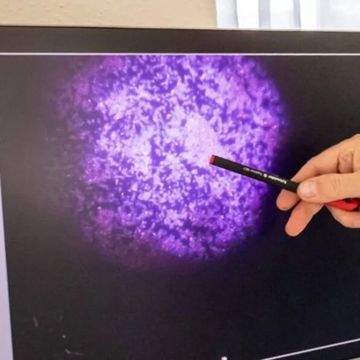
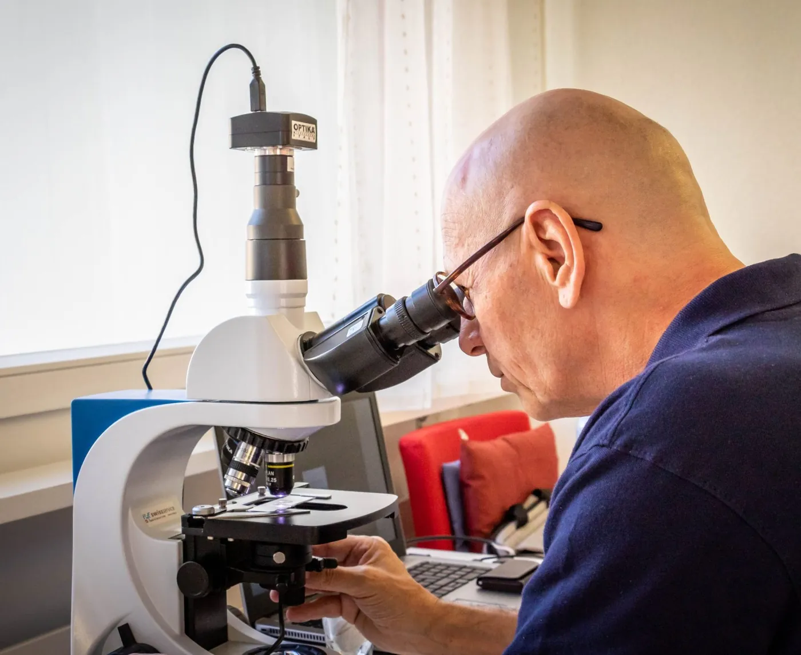

Unverfälschtes Nativblut
Ein Tropfen aus der Fingerkuppe, ohne Färbung und ohne chemische Zusätze – lebendig unter dem Mikroskop.
Wir schauen dein lebendiges Blut gemeinsam unter dem Dunkelfeldmikroskop an – unverfälscht, ohne chemische Zusätze, live auf dem Bildschirm. Und begleiten dich danach ganzheitlich und natürlich.

LIVEEin kurzer Pieks in die Fingerkuppe. Ein einziger Tropfen Kapillarblut reicht für die ganze Untersuchung.
Der Tropfen kommt sofort auf ein Glasplättchen und wird mit einem Deckglas bedeckt – ohne Färbung, ohne chemische Zusätze. So bleibt dein Blut lebendig, so wie es ist.
Im Dunkelfeldmikroskop fällt das Licht schräg auf die Probe. Der Hintergrund bleibt schwarz – alles, was im Blut ist, leuchtet hell auf.
Eine Kamera überträgt das Bild direkt auf den Bildschirm. Du schaust mit und siehst dein eigenes Blut in Bewegung.
Titus erklärt dir verständlich, was er sieht, und erstellt mit dir einen Massnahmenplan mit Rezeptempfehlung. Nach frühestens 2 Monaten zeigt die Nachkontrolle, was sich verändert hat.
Jetzt Analyse buchenDie Dunkelfeld-Diagnostik nach Prof. Dr. Günther Enderlein untersucht dein Nativblut, so wie es ist. Sie macht Entgleisungen sichtbar, die im üblichen Blutbild oft verborgen bleiben – als Ausgangspunkt für eine Begleitung, die bei den Ursachen ansetzt.

Im Dunkelfeld fällt das Licht seitlich ein. Der Hintergrund bleibt schwarz – und alles, was im Blut ist, leuchtet hell auf.
Ein Tropfen aus der Fingerkuppe, ohne Färbung und ohne chemische Zusätze – lebendig unter dem Mikroskop.
Das Bild läuft direkt auf den Bildschirm. Titus zeigt dir, was er sieht – und erklärt es verständlich.
Belastungen aus Umwelt, Lebensweise oder Erbanlagen werden als Ganzes betrachtet – Grundlage für deinen persönlichen Weg.
«Es ist unglaublich, was er aus einem Tropfen Blut alles sehen kann.»– Andrea, Dipl. Personalfachfrau & Coach
Ich bin interessiertWunschtermin online wählen – oder zuerst ein kostenloses Kennenlern-Telefonat von 15 Minuten.
Kurzer Pieks in die Fingerkuppe. Gemeinsam schaut ihr dein Blut live unter dem Dunkelfeldmikroskop an.
Du erhältst einen Massnahmenplan und eine Rezeptempfehlung mit natürlichen Mitteln – frisch abgefüllt aus der Apotheke direkt zu dir nach Hause.
Bei der Folgeuntersuchung siehst du selbst, wie sich dein Blutbild im Dunkelfeld verändert hat.
Mittel nicht inbegriffen.
Erstuntersuchung buchenMittel nicht inbegriffen.
Nachkontrolle buchenGespräch über Beschwerden, Analyse möglicher Ursachen, Energiebehandlung mit passenden Methoden und Nachtest.
Coaching buchenZwei Blutentnahmen vor und nach einer gewählten Massnahme, zum Beispiel einem Nahrungsergänzungsmittel oder Wasser. Mit kurzem Bericht und zwei Bildern per E-Mail.
Hausbesuche in der ganzen Schweiz nach Absprache. Begleitpersonen sind willkommen.
Ich fühlte mich oft müde und energielos, obwohl meine regelmässigen Blutwerte perfekt waren. Nach der Dunkelfeld-Diagnostik und ein paar Monaten Therapie mit biologischen Mitteln habe ich wieder viel Energie.
«Es war sehr faszinierend, mein eigenes Blut lebendig auf dem Bildschirm zu sehen.»
«Meine Werte verbessern sich durch die Therapie kontinuierlich. Die DFM ist ein sehr elegantes und aussagekräftiges Diagnostik-Instrument.»
«Ich war das erste Mal und es war sehr spannend! Bei mir war sofort Vertrauen da.»
«Man fühlt sich gehört und verstanden. Dieser Ort ist ein ganz besonderer und wertvoller.»
Nach einem schweren Unfall mit Nahtoderfahrung habe ich mich für einen bewussteren Lebensweg entschieden. Seitdem begleite ich Menschen mit natürlichen Heilverfahren auf dem Weg zu Gesundheit und Lebensgenuss – mit Vertrauen in die Schätze der Natur und einem Blick auf den ganzen Menschen.
Eine Betrachtung des lebenden, ungefärbten Blutes unter einem Mikroskop mit seitlichem Lichteinfall. Die Methode geht auf Prof. Dr. Günther Enderlein zurück und gehört zur Komplementärmedizin.
Die Erstuntersuchung dauert rund 60 Minuten: Gespräch über Beschwerden und Ziele, Dunkelfeld-Analyse in deinem Beisein, Massnahmenplan und Rezeptempfehlung. Eine Nachkontrolle dauert rund 45 Minuten.
Die Erstuntersuchung kostet CHF 180, die Nachkontrolle CHF 120. Zu zweit: CHF 340 bzw. CHF 240. Die empfohlenen Mittel sind nicht inbegriffen.
[TODO: Vorbereitung, z. B. nüchtern ja/nein – von Titus ergänzen]
Nein. Die Dunkelfeld-Diagnostik ist eine ergänzende, ganzheitliche Methode und ersetzt keine ärztliche Abklärung oder Behandlung.
Termin online buchen – oder einfach anrufen. Titus freut sich auf dich.